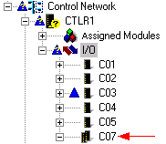

Important considerations for using redundant I/O
Rules you must follow
The lower slot number in a redundant pair must be an odd number, and the upper slot number must be the next higher even number. For example, you can install redundant pairs in slots 1 and 2, 3 and 4, and 9 and 10. You cannot install redundant pairs in slots 6 and 7 or 24 and 25. In this example from DeltaV Explorer, the redundant pair, C07, occupies slots 7 and 8. Notice that the next available slot, C06, was not used; this is because the lower slot number in a redundant pair must be odd.

Redundant terminal blocks
Other than redundant terminal blocks, no additional software or hardware is required to support redundancy. A redundant terminal block spans two adjacent slots on the I/O carrier. A redundant I/O card consists of two Series 2 cards installed in a redundant terminal block. Both cards access the same set of channels in the terminal block.
The double-wide redundant terminal blocks require only a single set of wires for each redundant channel or fieldbus segment. (The exception is the Redundant Interface terminal block that uses two sets of wires for the Series 2 Serial card. One set of wires is for each interface, such as a computer.) The redundant terminal blocks contain screw terminals appropriate for the card type, and signals from the screw terminals are connected to both cards in a redundant pair.
Line fault detection
The Series 2 DI, 8-Channel, 24 VDC, Dry Contact and the Series 2 DO, 8-Channel, 24 VDC, High-Side cards support line fault detection. (For DI cards, modify the wiring to include a series and parallel resistor at the sensor.) This capability can be enabled or disabled by configuration changes.
After resolving line fault errors, use the Clear Saved Fault Information command in DeltaV Diagnostics to re-enable switchovers if the same problems are detected again.
Manual switchovers
Always use the DeltaV Diagnostics program to perform a manual switchover. Removing the active card in a redundant pair can cause a disruption in the output signal. To perform a switchover in Diagnostics, right-click the card, and select Redundancy Switchover.